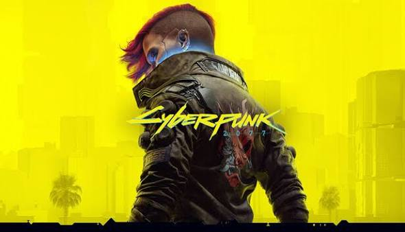
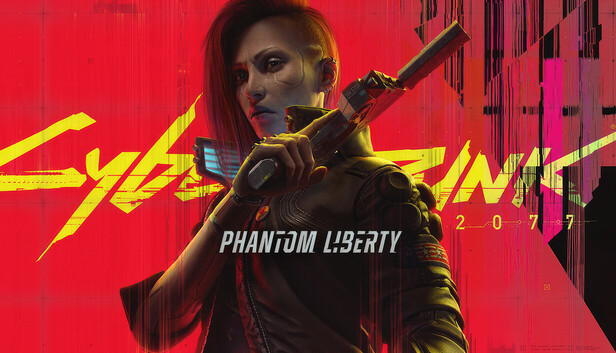

Game overview
Release date: December 2020
Cyberpunk 2077 [developed by game studio CD Projekt Red] is an open-world RPG that takes place in Night City, a dystopian califonia in the year 2077. The game features extensive character customization, body enhancements, and weaponry. Combined with a wide variety of missions, characters, dialogue options, and combat styles, this game remains one of the most impressive games I've played. The game revolves around the player, V, a mercenary (A.K.A. merc in-game), who must navigate the streets of Night City after a heist gone wrong. Throughout the game you must make connections with various people to claw your way up the societal ladder. Take jobs, assasinate big names, build trust with those who run the city from below - you've gotta do whatever it takes to survive in this city.
Most recent updates (oldest - newest)
- Patch 2.21
- - Various photo mode improvements
- - Vehicle customization improvements and fixes
- - Character customization fixes
- - Mission, open world, and NPC bug fixes
- Update 2.3
- - Added 4 new vehicles + acompanying side jobs
- - Improved photo mode and lighting
- - Quality of life improvements
- - Various bug fixes for missions, open world gameplay
- Patch 2.31
- - Vehicle autopilot fixes
- - Photo mode improvements
- - Mission and open world fixes
- - Graphical fixes, NPC fixes
How Cyberpunk 2077 became one of gaming's greatest redemption stories
When Cyberpunk 2077 first released, the game was extremely rough around the edges. Players reported countless bugs, excessive crashing, and poor game performance overall. Even high end PC builds were running the game as if it were being played on a potato. The launch of Cyberpunk went down in history as one of gaming's worst releases at the time, with Sony issuing a rare refund for anyone who wanted it. Many saw Cyberpunk up as another overly ambitious failure. Who could've guessed that just a few years later, the game would be thriving with a massive playerbase and an extremely popular show (with a second season in the works)? Nobody back in 2020, that's for sure.